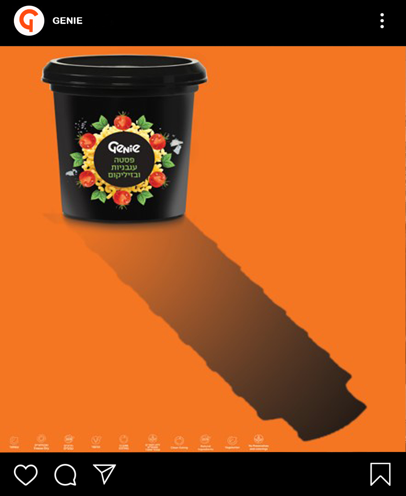
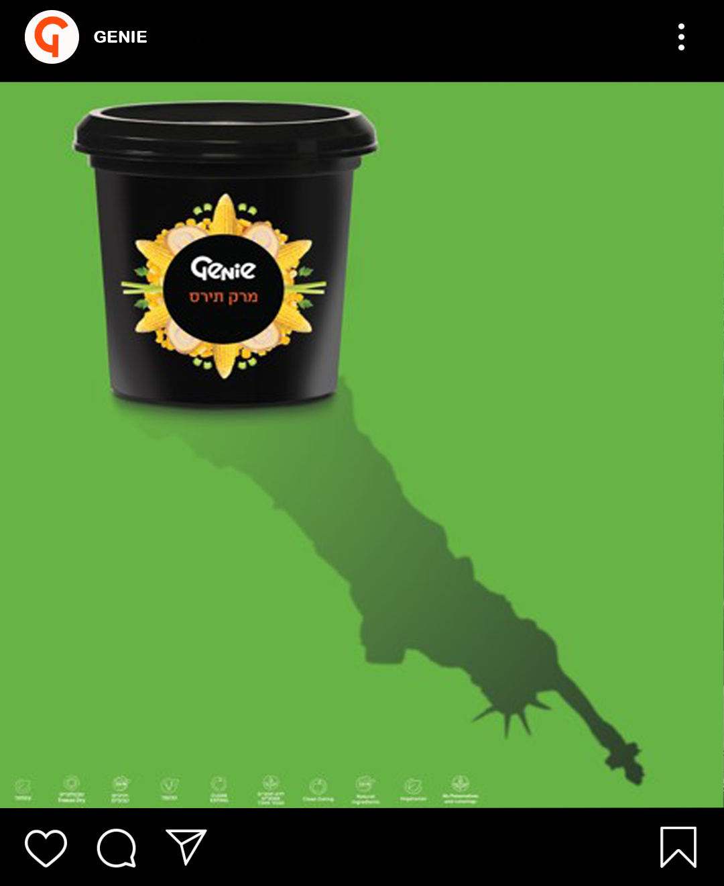

Genie: A Worldwide Flavor
Role: Art Direction, Digital Strategy & Experiential Campaign
The Brief & The Product
Launch "Genie," a groundbreaking robotic kitchen that prepares healthy, natural capsule-based meals in just three minutes. The challenge was to create a 360° campaign that communicated both the technological innovation and the culinary diversity of the product.
The Concept
"As Many Tastes as Many Countries." We positioned Genie not just as a time-saving appliance, but as a gateway to international cuisine. The core slogan, "Genie, A Worldwide Flavor," highlighted the global diversity of the capsules, transforming a quick meal into a cultural exploration.
Digital & Social Strategy
On social media, we mapped specific capsules to their countries of origin, creating a highly visual global food feed. We pushed engagement further through interactive Instagram Stories. By gamifying the experience and encouraging users to tap and interact, we created tactile, emotional connections with the brand to build long-term loyalty.
Experiential Activation: The Airline Partnership
To bridge the global and local experience, we designed an interactive app integration partnered with a low-cost airline. Customers could scan their Genie capsules at home to unlock travel prizes. For example, scanning an Italian pasta capsule could reward the user with flight tickets to Rome, associating Genie directly with the thrill of real-world exploration.

